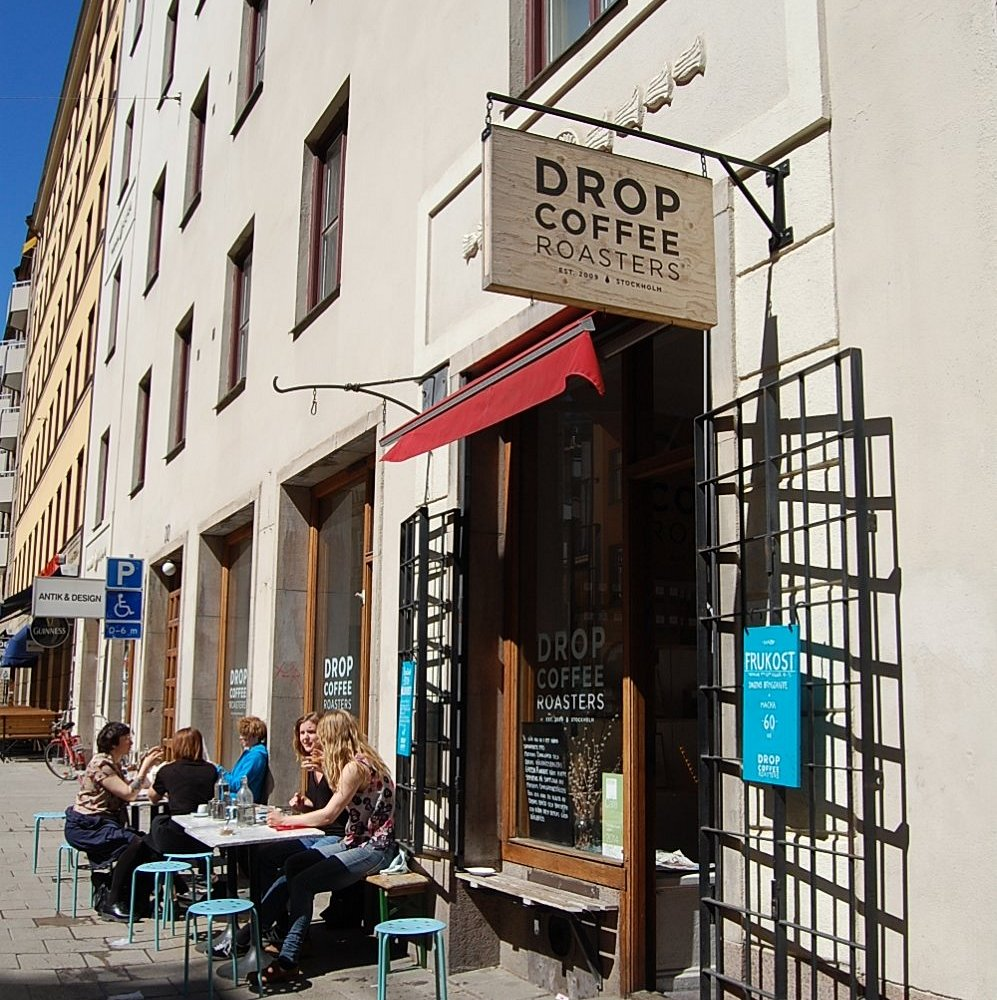
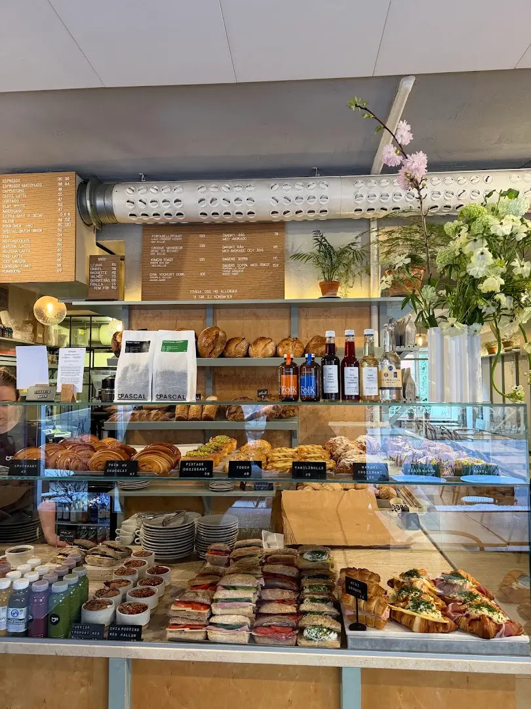
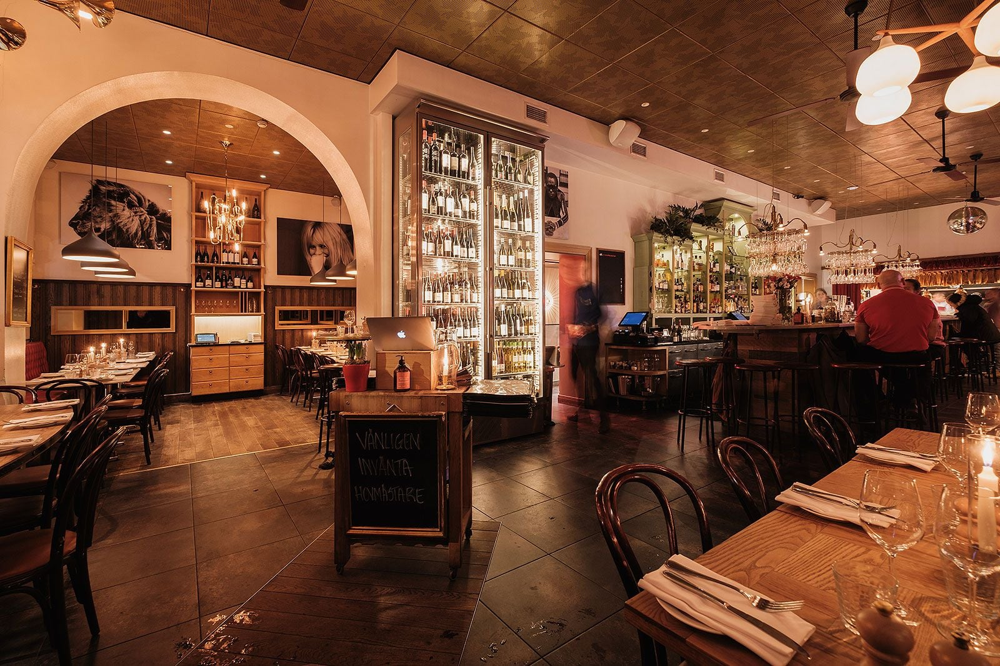
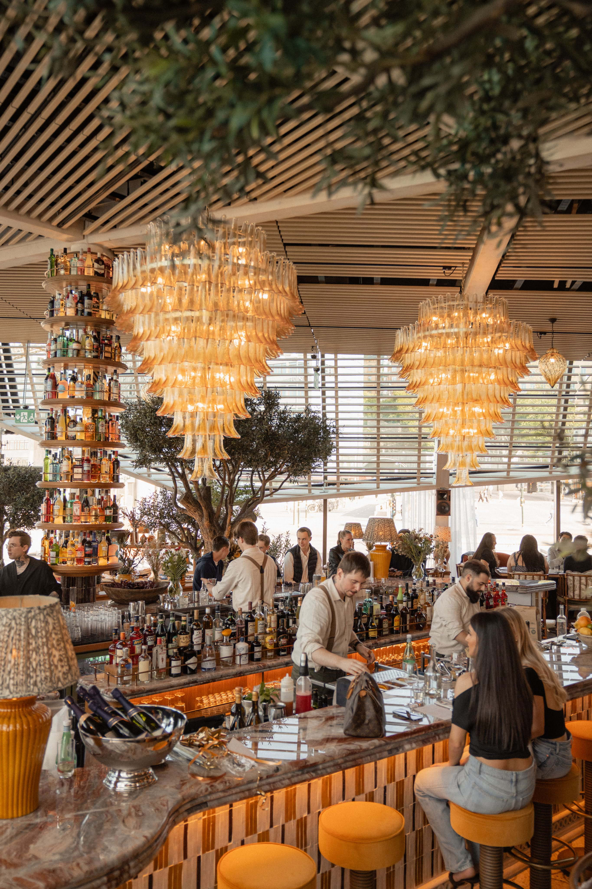

Södermalm är fullt av spännande matupplevelser. Här hittar du allt från små cafeer med nybakat fikabröd till populära resturanger och trevliga barer. Oavsett om du är sugen på en kaffe, en god middag eller något att dricka med vänner finns det gott om alternativ att utforska.

På Wollmar Yxkullsgatan 10, nära Mariatorget, hittar du Drop Coffee. Ett populärt ställe för dig som uppskattar riktigt gott kaffe.

I SoFo på Skånegatan 76, ligger Café Pascal. Ett café med en avslappnad atmosfär som passar perfekt för en fika med vänner eller en lugn stund.

På gatan med samma namn hittar vi Nytorget 6. I hjärtat av SoFo ligger den här resturangen som har en livlig och avslappnad atmosfär. Ett trevligt ställe för både lunch och middag.

Hos Villa Valentina på mälarterassen i Slussen, bjuds du inte bara på fantastisk spansk mat utan även en svårslagen panoramautsikt över mälaren och Gamla Stan. Här serveras andalusiska smårätter att dela på, tillsammans med spanska viner, sangria och välgjorda cocktails.